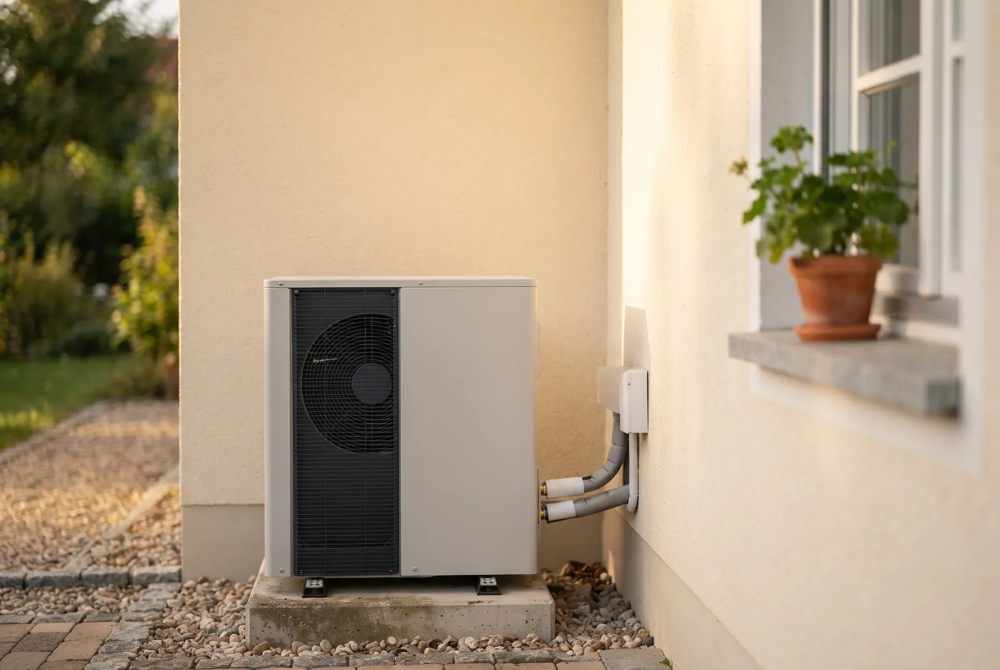
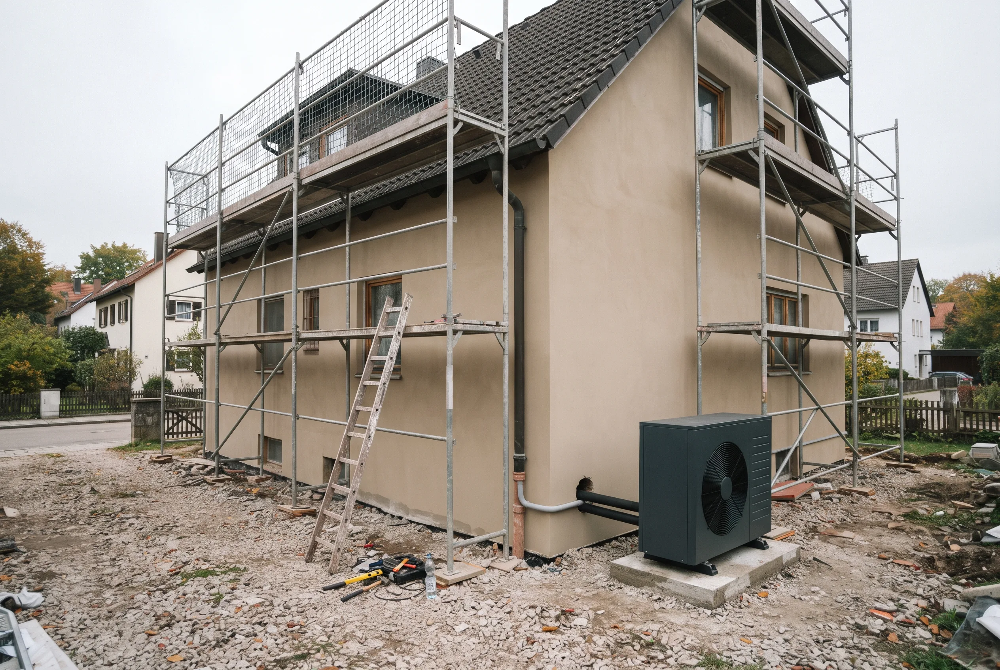
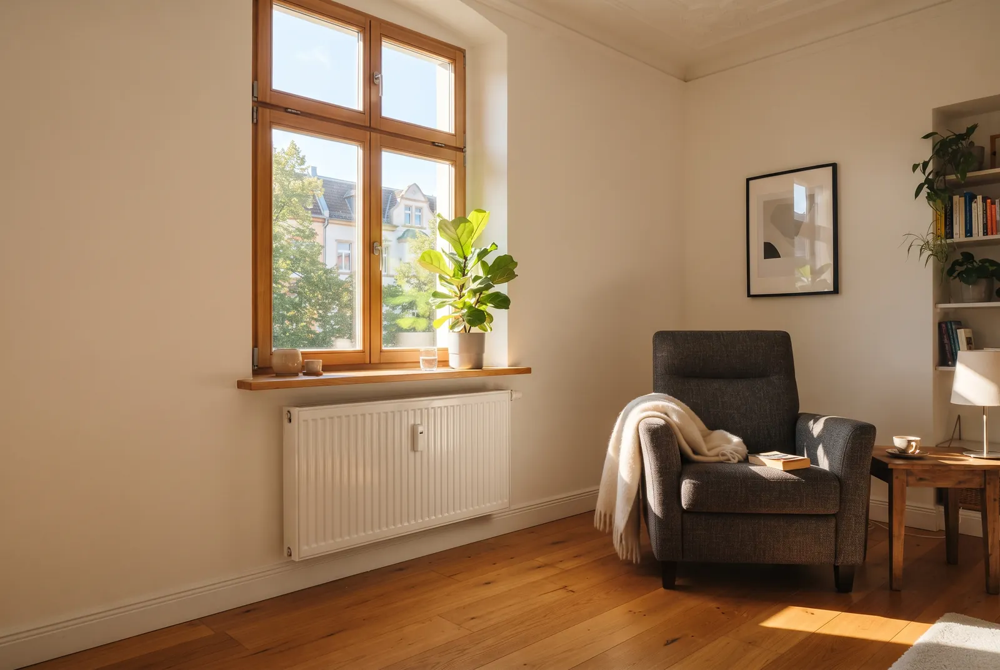

Inhaltsverzeichnis
Das Wichtigste in Kürze
- Vorlauftemperatur: Nicht das Baujahr entscheidet, sondern die Vorlauftemperatur Ihrer Heizung. Liegt sie unter 55 °C, läuft die Wärmepumpe wirtschaftlich.
- JAZ: Ab einer Jahresarbeitszahl von 3,5 ist die Wärmepumpe der Gasheizung klar überlegen; unter 3,0 kippt die Rechnung.
- Kosten & Ersparnis (Einfamilienhaus): Diese Werte gelten für Einfamilienhäuser und können sich von Haus zu Haus extrem unterscheiden. Als grobe Orientierung: Gesamtkosten 10.000–60.000 € je nach System, jährliche Ersparnis gegenüber Gas 500–1.400 €.
- Zwei Wege zur Wärmepumpe: Neben der Luft-Wasser-Wärmepumpe (ca. 27.000–40.000 € installiert) ist im Altbau oft die Luft-Luft-Wärmepumpe die wirtschaftlichere Wahl (ca. 10.000–20.000 €, Warmwasser separat +2.500–5.000 €) – beide werden über KfW 458 gleichermaßen gefördert. Alle €-Werte: Orientierung fürs Einfamilienhaus.
- Förderung: Für Förderanträge ab dem 21. Juli 2026 sind über die BEG nach aktuellem Stand bis zu 80 % möglich – im Einfamilienhaus maximal 22.400 € Zuschuss (förderfähige Kosten auf 28.000 € gedeckelt, ab Februar 2027 schrittweise sinkend). Bei Mehrfamilienhäusern ist der Deckel gestaffelt und muss individuell berechnet werden – er lässt sich nicht einfach mit der Zahl der Wohneinheiten multiplizieren. Der Antrag wird vor Beginn des Vorhabens gestellt; Grundlage ist ein Vertrag mit aufschiebender Bedingung.
- Vorlauf über 55 °C: Dann lohnt sich zuerst die Ertüchtigung der Heizflächen (größere oder zusätzliche Heizkörper), eine Hybridlösung als Brücke – oder eine Luft-Luft-Wärmepumpe, die keinen Hochtemperatur-Wasserkreis braucht.
Stand der Angaben (12. Juli 2026): Bundestag und Bundesrat haben am 10. Juli 2026 das neue Gebäudemodernisierungsgesetz (GModG) beschlossen, und die reformierten KfW-Förderbedingungen gelten laut BMWE und KfW für neue Anträge ab dem 21. Juli 2026. Das Gesetz ist jedoch noch nicht verkündet und die geänderte Förderrichtlinie noch nicht im Bundesanzeiger veröffentlicht – alle Zahlen geben den aktuellen Stand des Wissens wieder, ohne Gewähr. Die Förderung steht außerdem unter dem Vorbehalt verfügbarer Bundesmittel; ein Rechtsanspruch besteht nicht. Welche Konditionen für Ihr Vorhaben konkret gelten, prüfen wir gern tagesaktuell für Sie.
Warum ehrliche Einschätzung hier mehr wert ist als Verkaufsversprechen
Rund um die Wärmepumpe im Altbau kursieren zwei Lager. Das eine verspricht den problemlosen „1:1-Tausch" der alten Gasheizung gegen eine Wärmepumpe – ein Nachmittag Arbeit, fertig. Das andere warnt pauschal, Wärmepumpen seien für Altbauten ungeeignet. Beide Aussagen sind in dieser Form falsch und kosten Hausbesitzer im Zweifel Tausende Euro.
Wir bei EffiNova haben kein Interesse daran, Ihnen eine Anlage zu verkaufen, die in Ihrem Haus schlecht läuft. Eine unwirtschaftlich arbeitende Wärmepumpe ist für beide Seiten ein Problem: Sie zahlen hohe Stromrechnungen, und wir verlieren einen Kunden, der uns weiterempfiehlt. Deshalb beginnt jede seriöse Einschätzung mit der Frage, ob – und unter welchen Bedingungen – sich der Umstieg rechnet.
Die Wahrheit über den „1:1-Tausch"
Eine alte Gas- oder Ölheizung erzeugt Vorlauftemperaturen von oft 65 bis 75 °C. Bei diesen Temperaturen werden auch kleine, alte Heizkörper warm genug. Eine Wärmepumpe dagegen arbeitet umso effizienter, je niedriger die Vorlauftemperatur ist. Tauschen Sie den Wärmeerzeuger einfach aus, ohne das Heizsystem anzupassen, läuft die Wärmepumpe dauerhaft am oberen Leistungslimit – mit schlechter Effizienz, hohen Stromkosten und im schlimmsten Fall kalten Räumen an Frosttagen. Genau das ist der „1:1-Tausch", der schiefgeht.
Der Hebel liegt fast nie an der Wärmepumpe selbst, sondern an ihrem Umfeld: an den Heizflächen, an der Dämmung und an einer sauberen Heizlastberechnung. Wer diese Stellschrauben kennt, kann eine Wärmepumpe selbst in vielen unsanierten Altbauten sinnvoll betreiben.
Für wen dieser Leitfaden gemacht ist
Dieser Artikel richtet sich an Eigentümerinnen und Eigentümer von Bestandsgebäuden, die vor der Frage stehen: Soll ich meine Heizung auf eine Wärmepumpe umstellen – oder lohnt sich das in meinem Haus nicht? Sie müssen dafür kein Technik-Experte sein. Wir erklären die wenigen Kennzahlen, auf die es ankommt, und geben Ihnen am Ende eine Entscheidungsmatrix an die Hand, mit der Sie Ihr Gebäude grob einordnen können. Ob sich der Umstieg für Ihr Gebäude konkret lohnt, prüfen wir auf Wunsch gern persönlich für Sie.
Wann sich eine Wärmepumpe im Altbau lohnt
Eine Wärmepumpe lohnt sich im Altbau immer dann, wenn sie die benötigte Wärme mit niedriger Vorlauftemperatur und einer guten Jahresarbeitszahl bereitstellen kann. Vier Anzeichen sprechen klar dafür.
Vorlauftemperatur unter 55 °C – die wichtigste Weiche
Die Vorlauftemperatur ist die Temperatur des Heizwassers, das zu Ihren Heizkörpern oder zur Fußbodenheizung fließt. Sie ist der mit Abstand wichtigste Faktor. Als Faustregel gilt: Kommt Ihr Haus an kalten Tagen mit einer Vorlauftemperatur von 55 °C oder weniger aus, ist eine Wärmepumpe wirtschaftlich betreibbar. Unter 45 °C – etwa mit Fußbodenheizung – arbeitet sie sogar exzellent.
Den groben Test können Sie selbst machen: Stellen Sie die Vorlauftemperatur Ihrer bestehenden Heizung an einem kalten Wintertag so weit herunter, bis es in den Räumen gerade noch behaglich warm wird. Bleiben Sie dabei unter 55 °C, ist das ein sehr gutes Zeichen. Die belastbare Aussage liefert allerdings erst eine raumweise Heizlastberechnung – die Grundlage jeder seriösen Planung.
Gut gedämmte Gebäude: Baujahr ab 1995 oder kernsaniert
Häuser, die ab Mitte der 1990er-Jahre gebaut wurden, erfüllen meist bereits einen brauchbaren Dämmstandard. Wurde ein älteres Gebäude zwischenzeitlich kernsaniert – also Fassade, Dach, Fenster und oft auch die Heizflächen erneuert – gilt dasselbe. In solchen Häusern ist der Wärmebedarf so weit gesunken, dass moderate Vorlauftemperaturen ausreichen. Hier ist die Wärmepumpe in der Regel ohne weitere Vorarbeiten die richtige Wahl.
Teilsanierte Altbauten mit großen Heizkörpern
Auch ältere Häuser, die nur teilsaniert sind, sind oft besser geeignet als gedacht. Entscheidend ist die Größe der Heizflächen: Große, alte Gussheizkörper oder nachträglich eingebaute Niedertemperatur-Heizkörper geben auch bei niedriger Vorlauftemperatur genug Wärme ab. Wurden zusätzlich das Dach gedämmt und die Fenster getauscht, lässt sich die nötige Vorlauftemperatur häufig unter die kritische 55-°C-Marke drücken. In vielen dieser Fälle reicht es, einzelne unterdimensionierte Heizkörper zu tauschen, statt das ganze Haus zu sanieren.

JAZ ≥ 3,5: Der Wirtschaftlichkeitswert, den Sie kennen sollten
Die Jahresarbeitszahl (JAZ) gibt an, wie viele Kilowattstunden Wärme die Wärmepumpe aus einer Kilowattstunde Strom erzeugt. Eine JAZ von 3,5 bedeutet: Aus 1 kWh Strom werden 3,5 kWh Wärme. Je höher die JAZ, desto günstiger heizen Sie.
Als Wirtschaftlichkeitsschwelle gilt: Ab einer JAZ von 3,5 spielt die Wärmepumpe ihre Stärken voll aus und ist der Gasheizung in den laufenden Kosten klar überlegen. Eine gut geplante Luft-Wasser-Wärmepumpe erreicht diesen Wert in geeigneten Altbauten zuverlässig; mit Erdwärme (Sole-Wasser) liegt die JAZ oft noch höher. Welche JAZ in Ihrem Haus realistisch ist, hängt direkt von der Vorlauftemperatur ab – der Kreis schließt sich.
Der oft übersehene Weg: Luft-Luft-Wärmepumpe
Wenn über die Wärmepumpe im Altbau gesprochen wird, ist fast immer die Luft-Wasser-Variante gemeint – dabei gibt es einen zweiten, oft günstigeren Weg: die Luft-Luft-Wärmepumpe (Multisplit). Sie heizt die Räume direkt über Innengeräte und umgeht die Vorlauftemperatur-Hürde komplett, weil kein 55–70-°C-Wasserkreis nötig ist. Fürs Einfamilienhaus liegt sie installiert bei etwa 10.000–20.000 € statt 27.000–40.000 € (Orientierungswerte) – ehrlicherweise muss das Warmwasser separat gelöst werden, etwa mit einer Brauchwasser-Wärmepumpe für 2.500–5.000 €, die vorhandenen Heizkörper bleiben ungenutzt, und die Innengeräte sind sichtbar. Gefördert wird sie über KfW 458 genauso wie eine Luft-Wasser-Wärmepumpe, sofern das Gerät auf der BAFA-Liste förderfähiger Wärmepumpen steht und als Heizung die alte Anlage ersetzt. Den vollständigen Vergleich beider Systeme finden Sie in unserem Beitrag Luft-Luft- vs. Luft-Wasser-Wärmepumpe im Altbau.
Rechnet sich die Wärmepumpe bei den neuen Fördersätzen für Ihr Haus?
Ehrliche Ersteinschätzung: EffiNova prüft mit Heizlastberechnung und Vor-Ort-Begehung, ob sich der Umstieg zu den ab 21. Juli geltenden Konditionen für Ihr Gebäude rechnet.
Kostenlose ErsteinschätzungWann sich eine Wärmepumpe (noch) nicht lohnt
Ehrlichkeit gehört dazu: In manchen Gebäuden ist der direkte Umstieg auf eine Wärmepumpe heute keine gute Idee. Das heißt nicht „nie" – aber „noch nicht" oder „nicht ohne Vorarbeiten".
Vorlauftemperatur dauerhaft über 55 °C ohne ertüchtigte Heizflächen
Braucht Ihr Haus an normalen Wintertagen dauerhaft mehr als 55 °C Vorlauftemperatur, um warm zu werden, läuft eine Wärmepumpe in diesem Zustand ineffizient – mit großem Temperaturhub, sinkender Jahresarbeitszahl und entsprechend hohen Stromkosten. Dann lohnt es sich, zuerst die Heizflächen zu ertüchtigen: größere oder zusätzliche Heizkörper und, wo nötig, gezielte Dämmung, um die benötigte Vorlauftemperatur unter 55 °C zu senken. Erst danach arbeitet die Wärmepumpe wirtschaftlich. Bei sehr hohen Werten von über etwa 70 °C ist ohne diese Vorarbeiten keine gute JAZ erreichbar.
Unsanierter Altbau vor 1978 ohne Investitionsbereitschaft
Gebäude, die vor 1978 und damit vor der ersten Wärmeschutzverordnung errichtet wurden und seither nicht energetisch ertüchtigt sind, verlieren viel Wärme über Wände, Dach und Fenster. In solchen Häusern ist nicht die Wärmepumpe das Problem, sondern die ungebremsten Wärmeverluste. Wer hier nicht bereit ist, parallel in Dämmung oder zumindest größere Heizkörper zu investieren, wird mit einer reinen Wärmepumpe nicht glücklich.

Sehr kleines Budget und kein Sanierungsplan
Eine Wärmepumpe ist eine Investition, die sich über Jahre auszahlt – nicht über Nacht. Wer ein sehr kleines Budget hat, keine Förderung in Anspruch nehmen kann oder will und keinen Plan für die nächsten Schritte hat, fährt mit einer überstürzten Anlage schlecht. In diesem Fall ist es sinnvoller, zunächst einen Sanierungsfahrplan erstellen zu lassen und die Maßnahmen geordnet anzugehen.
JAZ unter 3,0: Wenn der Strom teurer wird als das Gas
Die klare Wirtschaftlichkeitsgrenze liegt bei einer JAZ von 3,0. Fällt die Jahresarbeitszahl darunter, kippt die Rechnung: Der teurere Strom macht den Effizienzvorteil zunichte, und die Wärmepumpe heizt unter Umständen teurer als eine moderne Gasheizung. Eine JAZ unter 3,0 ist daher das wichtigste Warnsignal – und der Grund, warum die ehrliche Heizlastberechnung vor dem Kauf so entscheidend ist.
Häufigste Fehlerquelle: In fast allen problematischen Fällen fehlte eine raumweise Heizlastberechnung. Ohne sie wird die Wärmepumpe „nach Gefühl" oder nach der alten Heizungsleistung ausgelegt – meist zu groß und mit zu hoher Vorlauftemperatur. Das Ergebnis ist genau die schlechte JAZ, vor der alle warnen.
Der Kostenfaktor: Was eine Wärmepumpe im Altbau wirklich kostet
Die Kosten schwanken stark, weil im Altbau fast immer Begleitmaßnahmen dazukommen. Statt einer einzelnen Zahl ist eine ehrliche Spanne hilfreicher.
Gesamtkosten realistisch: 10.000 bis 60.000 €
| Position | Realistische Spanne (vor Förderung) |
|---|---|
| Luft-Luft-Wärmepumpe (Multisplit, Ganzhaus)* | 10.000 – 20.000 € |
| Luft-Wasser-Wärmepumpe (komplett installiert) | 27.000 – 40.000 € |
| Sole-Wasser-Wärmepumpe (mit Erdbohrung/Kollektor) | 25.000 – 45.000 € |
| Begleitende Maßnahmen bei wasserführenden Systemen (größere Heizkörper, hydraulischer Abgleich, Pufferspeicher) | 3.000 – 12.000 € |
| Optionale Teilsanierung (Dämmung, Fenster) | individuell |
| Realistische Gesamtspanne | 10.000 – 60.000 € |
* Alle Werte: Orientierung fürs Einfamilienhaus (Marktniveau 2026). Bei der Luft-Luft-Wärmepumpe kommt die Warmwasser-Bereitung separat hinzu – z. B. eine Brauchwasser-Wärmepumpe für 2.500–5.000 €.
Die untere Spanne erreicht vor allem die Luft-Luft-Lösung, die ohne Wasserkreis auskommt; bei der Luft-Wasser-Wärmepumpe kommen zum installierten Gerät im Altbau meist noch Begleitmaßnahmen hinzu. Die obere Spanne betrifft anspruchsvolle Altbauten mit Erdwärme und zusätzlicher Teilsanierung.
Förderung: bis zu 80 % über die BEG
Die gute Nachricht: Der Staat trägt einen erheblichen Teil. Für Förderanträge ab dem 21. Juli 2026 setzt sich der Heizungstausch-Zuschuss über die Bundesförderung für effiziente Gebäude (BEG) – beantragt wird er im KfW-Portal (Programm 458) – nach aktuellem Stand laut KfW und BMWE so zusammen:
- Grundförderung: 30 % – für jeden, der eine alte Heizung gegen eine Wärmepumpe tauscht.
- Klimageschwindigkeitsbonus: +16 % – für Selbstnutzer beim Austausch einer funktionstüchtigen Öl-, Kohle-, Gasetagen- oder Nachtspeicherheizung; Gas- und Biomasse-Zentralheizungen zählen ab 20 Jahren Alter. Der Bonus sinkt erstmals zum 1. Februar 2027 und danach halbjährlich um 4 Prozentpunkte.
- Einkommensbonus: +40, +30 oder +10 % – für selbstnutzende Eigentümer, gestaffelt nach dem zu versteuernden Haushaltseinkommen: 40 % bis 30.000 €, 30 % bis 40.000 €, 10 % bis 50.000 € pro Jahr.
- Familienzuschlag (neu): Lebt mindestens ein minderjähriges Kind im Haushalt, wird das anzusetzende Einkommen einmalig um 10.000 € reduziert – Familien erreichen so leichter eine höhere Stufe des Einkommensbonus.
Der frühere Effizienzbonus von 5 % für Wärmepumpen mit natürlichem Kältemittel entfällt für neue Anträge ersatzlos. Geräte mit natürlichen Kältemitteln wie R290 bleiben technisch dennoch eine sinnvolle Wahl – einen zusätzlichen Förderbonus gibt es dafür aber nicht mehr.
So rechnet sich die Förderung: Die Boni sind auf insgesamt maximal 80 % gedeckelt, die förderfähigen Kosten im Einfamilienhaus auf 28.000 € (sinkt erstmals zum 1. Februar 2027). Die maximale Fördersumme beträgt damit 22.400 €. Rechenbeispiel: Bei einem 35.000-€-Projekt sind 28.000 € förderfähig; mit 30 % Grundförderung plus 16 % Klimageschwindigkeitsbonus (46 %) ergibt das 12.880 € Zuschuss und 22.120 € Eigenanteil – im Best Case von 80 % sind es 22.400 € Zuschuss und 12.600 € Eigenanteil. Wichtig: Lassen Sie das Angebot vor der Unterschrift auf Förderfähigkeit prüfen (das übernehmen wir bei EffiNova für Sie), schließen Sie dann den Liefer-/Leistungsvertrag mit aufschiebender Bedingung und stellen Sie erst danach den Antrag – wer vor der Antragstellung mit dem Einbau beginnt, verliert den Anspruch.
Laufende Kosten: Strom vs. Gas
Ein Rechenbeispiel für ein typisches Einfamilienhaus mit rund 20.000 kWh Jahresheizwärmebedarf:
- Gasheizung: rund 22.000 kWh Gasbezug bei etwa 12 ct/kWh ergeben ca. 2.640 € pro Jahr – Tendenz steigend durch den CO₂-Preis.
- Wärmepumpe (JAZ 3,5): rund 5.700 kWh Strom bei etwa 25 ct/kWh im Wärmepumpentarif ergeben ca. 1.430 € pro Jahr.
Das entspricht einer Ersparnis von rund 1.200 € jährlich. Je nach Strompreis, Gaspreis und erreichter JAZ liegt die realistische Einsparung zwischen 500 und 1.400 € pro Jahr. Sinkt die JAZ Richtung 3,0, schrumpft der Vorteil – fällt sie darunter, kehrt er sich um.
Amortisation: Wann rechnet sich die Investition?
Nach Abzug der Förderung bleibt bei einem 35.000-€-Projekt (davon 28.000 € förderfähig) mit 46 % Förderung – also 12.880 € Zuschuss – ein Eigenanteil von rund 22.120 €. Bei 1.200 € Ersparnis pro Jahr ist dieser Betrag in etwa 18 bis 19 Jahren wieder hereingeholt. Unter günstigen Bedingungen – maximale Förderung von 80 % (Eigenanteil dann 12.600 €), gute JAZ, steigende Gaspreise – ist die Amortisation in rund 9 bis 11 Jahren möglich. Realistisch sollten Sie für die meisten Altbauten mit 10 bis 20 Jahren rechnen, je nachdem, welche Boni greifen und ob Begleitmaßnahmen nötig sind. Über die Lebensdauer von 20 Jahren und mehr betrachtet arbeitet eine gut geplante Anlage dennoch günstiger als jede fossile Heizung.
Lohnt sich die Wärmepumpe nach der Förderkürzung noch?
Die ehrliche Antwort: Ja — wenn Vorlauftemperatur und Jahresarbeitszahl stimmen. Die Reform hat die Förderung gekürzt, aber nicht gestrichen: Statt der alten Konditionen gilt für Anträge ab dem 21. Juli 2026 im Standardfall der Satz von 46 % (30 % Grundförderung plus 16 % Klimageschwindigkeitsbonus) auf höchstens 28.000 € förderfähige Kosten — also 12.880 € Zuschuss. Bei einem 35.000-€-Projekt bleiben damit 22.120 € Eigenanteil; bei 1.200 € jährlicher Ersparnis gegenüber Gas trägt sich die Anlage weiterhin über ihre Lebensdauer. An der Grundrechnung ändert die Kürzung also nichts: Liegt die Vorlauftemperatur unter 55 °C und die JAZ über 3,5, rechnet sich der Umstieg auch zu den neuen Sätzen — liegt sie darüber, hätte er sich auch zu den alten nicht gerechnet. Wichtig für die Planung: Die Förderung sinkt ab dem 1. Februar 2027 schrittweise weiter — den vollständigen Degressions-Fahrplan und den Antragsweg zeigt unser Beitrag zum Beantragen der Wärmepumpen-Förderung.
Keine Pflicht mehr durch das GModG — warum die Wirtschaftlichkeit trotzdem dafür spricht
Mit dem am 10. Juli 2026 von Bundestag und Bundesrat beschlossenen Gebäudemodernisierungsgesetz (GModG) entfällt die 65-Prozent-Vorgabe für erneuerbare Energien — es gilt künftig freie Heizungswahl (das Gesetz ist allerdings noch nicht verkündet). Niemand muss also auf eine Wärmepumpe umsteigen. Genau deshalb lohnt der nüchterne Blick auf die Zahlen: Der CO₂-Preis verteuert Gas und Öl Jahr für Jahr weiter, die Wärmepumpe heizt bei guter JAZ mit deutlichem Kostenvorteil beim Strom, und der Staat bezuschusst den Umstieg weiterhin mit 30 bis 80 % der förderfähigen Kosten. Wer sich heute für die Wärmepumpe entscheidet, tut das nicht wegen einer Pflicht — sondern weil die Wirtschaftlichkeitsrechnung in geeigneten Gebäuden schlicht für sie spricht.
Hybridlösung als kluger Zwischenweg
Zwischen „Wärmepumpe sofort" und „erst komplett sanieren" gibt es einen oft übersehenen dritten Weg: die Hybridheizung. Für viele Altbauten ist sie nicht der Kompromiss, sondern die wirtschaftlich beste Lösung.
Was eine Hybridheizung ist
Eine Hybridheizung kombiniert eine Wärmepumpe mit einem zweiten Wärmeerzeuger – meist einer (oft bereits vorhandenen) Gas- oder Ölheizung. Die Wärmepumpe übernimmt den Großteil des Jahres die Heizarbeit bei niedrigen Vorlauftemperaturen. Nur an den wenigen sehr kalten Tagen, an denen hohe Vorlauftemperaturen gefragt sind, springt der zweite Erzeuger ein. So arbeitet die Wärmepumpe immer in ihrem effizienten Bereich.
Für wen die Hybridlösung die bessere Wahl ist
Die Hybridheizung ist ideal für Gebäude im Übergangsbereich – also Häuser, deren Vorlauftemperatur an den meisten Tagen bei 55 °C liegt, an Frosttagen aber Richtung 70 °C steigt. Genau in dieser Lücke spielt sie ihre Stärke aus: Sie holen den Großteil der Effizienzgewinne ab, ohne das Risiko kalter Räume an Extremtagen. Auch wer eine noch funktionstüchtige Heizung weiternutzen und die Sanierung über Jahre strecken möchte, fährt mit der Hybridlösung gut.
Kosten und Förderung
Eine Hybridlösung liegt mit rund 15.000 – 25.000 € häufig unter einer reinen Wärmepumpenlösung mit umfangreichen Begleitmaßnahmen. Wird die Wärmepumpe im Hybridsystem über die BEG gefördert, gelten dieselben Fördersätze wie oben – gefördert wird dabei nur der Wärmepumpen-Anteil, der die technischen Anforderungen erfüllen muss; der fossile Kessel selbst ist nicht förderfähig. Für viele Eigentümer ist das der pragmatische Einstieg in die Wärmewende, ohne sich finanziell zu übernehmen.

Entscheidungsmatrix — welche Lösung passt zu Ihrem Gebäude?
Ordnen Sie Ihr Haus grob in eine der vier Kategorien ein. Die Matrix ersetzt keine Heizlastberechnung, gibt Ihnen aber eine ehrliche erste Richtung.
| Gebäudetyp | Vorlauftemperatur | Unsere Empfehlung |
|---|---|---|
| Altbau vor 1978, unsaniert | über 70 °C | Erst sanieren bzw. Heizflächen vergrößern, dann Wärmepumpe – oder Luft-Luft-Wärmepumpe prüfen: Sie braucht keinen Hochtemperatur-Wasserkreis |
| Baujahr 1978–1994, teilgedämmt | 55–70 °C | Hybridlösung, Luft-Luft-Wärmepumpe oder Luft-Wasser-Wärmepumpe nach gezielter Teilsanierung |
| Baujahr ab 1995 oder kernsaniert | bis 55 °C | Wärmepumpe direkt sinnvoll – meist ohne Vorarbeiten |
| Gründerzeit / Denkmalschutz | variabel | Fachberatung zwingend – individuelle Lösung statt Pauschalurteil |
Häufige Fragen
Ist eine Wärmepumpe im Altbau wirklich sinnvoll?
Eine Wärmepumpe im Altbau ist dann sinnvoll, wenn die Vorlauftemperatur des Heizsystems unter 55 °C liegt und das Gebäude ausreichend gedämmt ist. Bei Baujahren ab 1995 oder kernsanierten Häusern ist das häufig der Fall. Bei unsanierten Altbauten vor 1978 sollten zuerst Dämmmaßnahmen umgesetzt werden.
In welchen Häusern scheitert die Wärmepumpe?
Wärmepumpen arbeiten unwirtschaftlich in Gebäuden mit Vorlauftemperaturen dauerhaft über 70 °C, also typischerweise in unsanierten Altbauten vor 1978 mit kleinen, alten Heizkörpern. Auch fehlende Stellfläche oder ein sehr geringer Jahresheizwärmebedarf unter 8.000 kWh können gegen den Einbau sprechen.
Welche Wärmepumpe ist für Altbauten geeignet?
Im Altbau kommen vor allem zwei Systeme infrage: Die Luft-Luft-Wärmepumpe heizt die Räume direkt über Innengeräte – ganz ohne die Vorlauftemperatur-Hürde eines Wasserkreises – und ist mit rund 10.000–20.000 € (Orientierung Einfamilienhaus) oft die wirtschaftlichere Wahl; Warmwasser wird separat gelöst, z. B. mit einer Brauchwasser-Wärmepumpe für 2.500–5.000 €. Die Luft-Wasser-Wärmepumpe (ca. 27.000–40.000 € installiert) ist sinnvoll, wenn die vorhandenen Heizkörper und die Hydraulik weiter genutzt und das Warmwasser integriert werden sollen. Sole-Wasser-Wärmepumpen erreichen höhere JAZ-Werte, brauchen aber ausreichende Grundstücksfläche. Beide Luft-Systeme werden über KfW 458 gleichermaßen gefördert.
Welche Häuser sind nicht für eine Wärmepumpe geeignet?
Gebäude mit dauerhaft über 70 °C Vorlauftemperatur sind nicht optimal geeignet – vor allem unsanierte Altbauten vor 1978. Denkmalgeschützte Häuser erfordern eine individuelle Beratung.
Wie hoch ist die Förderung für eine Wärmepumpe im Altbau 2026?
Für Förderanträge ab dem 21. Juli 2026 gilt nach aktuellem Stand: Über die BEG gibt es einen Grundzuschuss von 30 %; beantragt wird der Heizungstausch-Zuschuss über das KfW-Portal (Programm 458). Mit Klimageschwindigkeitsbonus (16 %, ab Februar 2027 schrittweise sinkend), gestaffeltem Einkommensbonus (40, 30 oder 10 %) und Familienzuschlag sind laut KfW bis zu 80 % möglich. Die förderfähigen Kosten sind im Einfamilienhaus auf 28.000 € gedeckelt (ab Februar 2027 schrittweise sinkend) – die maximale Fördersumme beträgt damit 22.400 €; bei Mehrfamilienhäusern gilt eine Staffelung je Wohneinheit. Der Antrag wird vor Beginn des Vorhabens gestellt – Grundlage ist ein Vertrag mit aufschiebender Bedingung.
Wird die Wärmepumpe 2026 noch gefördert?
Ja. Auch nach der Reform vom Juli 2026 wird der Heizungstausch weiter bezuschusst: Für Anträge ab dem 21. Juli 2026 gibt es nach aktuellem Stand 30 % Grundförderung für alle, mit Klimageschwindigkeits-, Einkommensbonus und Familienzuschlag je nach Situation zwischen 30 und 80 % der förderfähigen Kosten. Ab Februar 2027 sinken Klimageschwindigkeitsbonus und förderfähiger Höchstbetrag allerdings schrittweise – wer ohnehin plant, sichert sich mit einem früheren Antrag die höheren Konditionen. Den Ablauf Schritt für Schritt erklärt unser Beitrag zum Beantragen der Wärmepumpen-Förderung.
Fazit: Unser ehrliches Urteil — und wie EffiNova hilft
Die Wärmepumpe im Altbau lohnt sich – aber nicht überall und nicht ohne Plan. Entscheidend ist nicht das Baujahr auf dem Papier, sondern die Vorlauftemperatur, die Ihr Haus tatsächlich braucht, und die daraus folgende Jahresarbeitszahl. Liegt die Vorlauftemperatur unter 55 °C und die JAZ über 3,5, ist der Umstieg klar wirtschaftlich. Im Übergangsbereich ist die Hybridlösung oft die klügere Wahl, und bei unsanierten Häusern lohnt sich zuerst die Ertüchtigung der Heizflächen oder Dämmung.
Die mit Abstand häufigste Fehlerquelle ist eine fehlende, saubere Heizlastberechnung. Sie ist die Grundlage dafür, dass Ihre Wärmepumpe richtig dimensioniert wird, mit niedriger Vorlauftemperatur läuft und die versprochene Effizienz auch erreicht.
„Nicht das Baujahr entscheidet, ob sich eine Wärmepumpe im Altbau lohnt – sondern die Vorlauftemperatur und eine ehrliche Heizlastberechnung."
Genau hier setzen wir an: EffiNova erstellt für Ihr Gebäude die raumweise Heizlastberechnung, prüft die nötige Vorlauftemperatur und sagt Ihnen ehrlich, ob sich eine Wärmepumpe, eine Hybridlösung oder zunächst eine Sanierung rechnet – inklusive vollständigem Fördermittel-Check. So treffen Sie Ihre Entscheidung auf Basis von Zahlen, nicht von Versprechen.